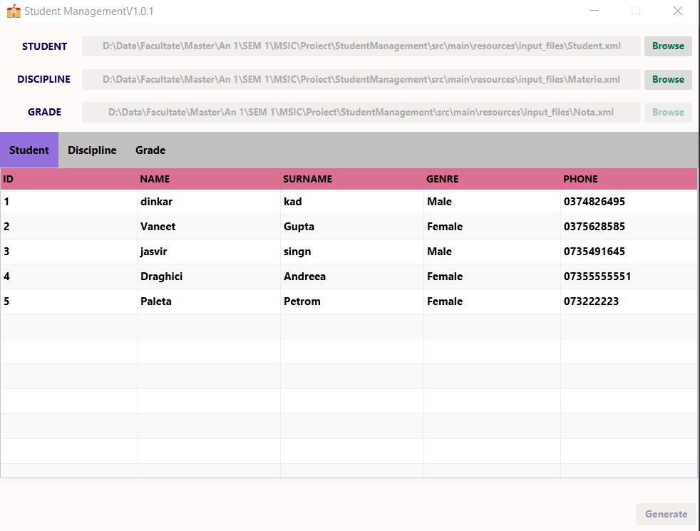

The Student Management Application is a versatile tool designed for managing student information, disciplines, and grades and generate a report for specified discipline with save in a xml (. xml) file.. It features both a Graphical User Interface (GUI) and a Command Line Interface (CLI), providing flexibility for users with different preferences.
GUI and CLI Support: Users can interact with the application either through a user-friendly GUI or a command-line interface.
Import Data: The application accepts three XML files containing student, discipline, and grade information.
Generate Reports: Users can generate reports for a specified discipline with students sorted alphabetically.
Save Reports: The generated reports are saved in XML format for future reference.
The application requires three XML files as inputs. These files contain information about students, disciplines, and grades.
Launch Application: Run the application, and the GUI interface will be displayed.
Import XML Files: Click on the "Import XML Files" button to load the required XML files.
Generate Reports: View the imported data and generate reports for specified disciplines.
Run CLI Application: Execute the CLI application with appropriate command-line arguments.
Provide XML Paths: Include file paths for the student, discipline, and grade XML files.
Generate Reports: Reports will be generated for specified disciplines in CLI mode.

Click the "Browse" button. Select the XML files for students, disciplines, and grades.
After importing, the data from XML files will be displayed in a table view.
Select a "Generate Report" button to create a report for that discipline. The report will be alphabetically sorted and saved in XML format.
java -jar StudentManagement.jar -s "/path/to/student/file.xml" -d "/path/to/discipline/file.xml" -g "/path/to/grade/file.xml" -o "/path/to/output/file.xml"
Provide file paths for student, discipline, and grade XML files.
Reports will be generated for specified disciplines.
Reports generated by the application will be saved in XML format.
| Syntax | Description |
|---|---|
| GUI | Graphical User Interface |
| XML | Extensible Markup Language |
| CLI | Command Line Interface |
To facilitate the management of input file paths, the application supports the use of a properties file. This properties file can be used to store and reload the configurations of the paths for the XML files.
#Sun Dec 03 13:03:18 EET 2023
STUDENT_XML_PATH=/path/to/student/file.xml
GRADE_XML_PATH=/path/to/discipline/file.xml
DISCIPLINE_XML_PATH=/path/to/grade/file.xml